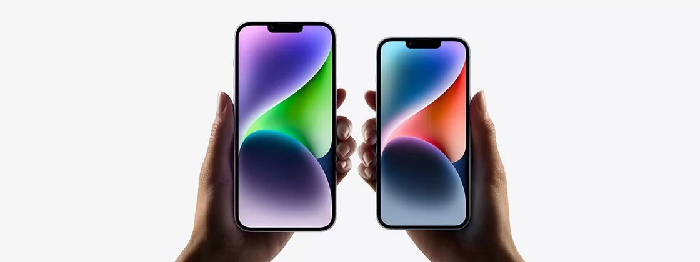

Apple começa a produzir iPhone 14 fora da China

Nesta segunda-feira (26), a Apple anunciou que levará parte da produção do iPhone 14 para a Índia — aliviando a dependência com as fábricas chinesas. A gigante de Cupertino já produz celulares no país desde 2017, mas limitava-se aos modelos mais antigos. Reforçando sua aposta, a empresa contará com o apoio da Foxconn e sua fábrica em Sriperumbudur, nos arredores de Chenai, para possibilitar a mudança.
Buscando também aumentar sua influência no mercado indiano, onde possui pouca presença, a Apple venderá os celulares produzidos na Índia já nas próximas semanas — embora também os exporte. Para os analistas da JPMorgan, a empresa deve levar 5% de sua produção do iPhone 14 para o país até o final deste ano e até 25% de todos os modelos até 2025.
Apesar de muito positiva para o mercado indiano, a decisão ainda é pequena frente à dependência da empresa com as fábricas chinesas — que sofrem com os surtos endêmicos da covid-19 e severas restrições governamentais.
Linha de produção de iPhones na Foxconn.
Líder no segmento premium
Em 2021, a Apple encarou apenas 3,8% de presença no disputado mercado indiano. Entretanto, a empresa conseguiu emplacar o iPhone 13 como celular mais vendido no país durante o segundo trimestre deste ano, no segmento "ultra-premium"— com modelos de até US$ 550 ou R$ 2.960, em conversão direta. Em contraste, o iPhone 14 chegará ao país por US$ 980 ou R$ 5.280, aproximadamente.